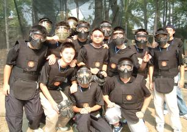
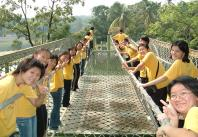
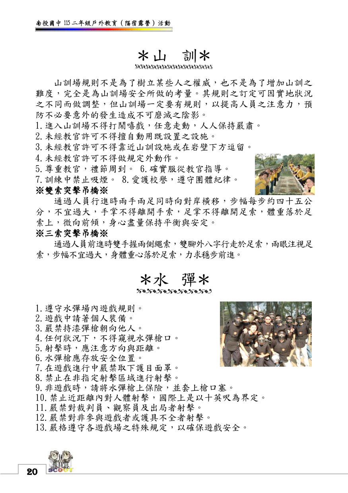
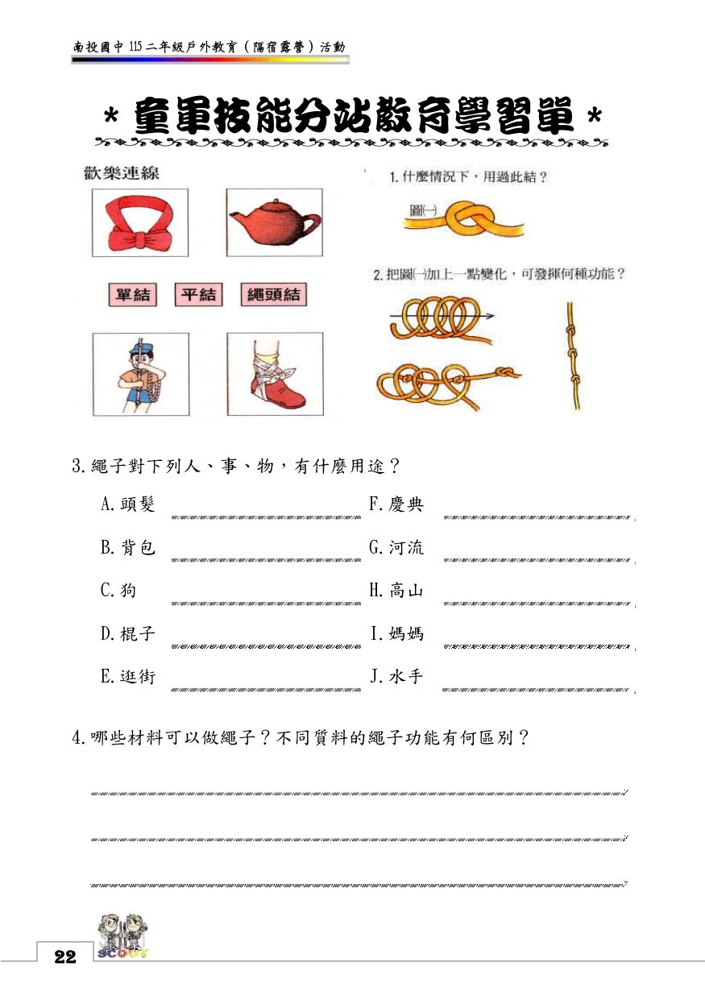

📅 兩日行程時間與路線
點選下方天數切換行程細節、用餐安排與重點時間
🔍 帳號、桌次與車次即時速查
輸入同學姓名、帳號、班級（801~807）或桌次即可秒查！姓名第二字固化遮蔽確保個資安全。
| 班級 | 學生姓名 | 性別 | 分配車次 | 帳篷編號 | 野炊組別 | 重要備註 |
|---|---|---|---|---|---|---|
| 801 班 | 林O諼 | 👦 男 | 🚌 3 車 | ⛺ A01 | 🍲 第 1 組 | - |
| 801 班 | 張O鈞 | 👦 男 | 🚌 3 車 | ⛺ A01 | 🍲 第 1 組 | - |
| 801 班 | 張O偉 | 👦 男 | 🚌 3 車 | ⛺ A01 | 🍲 第 1 組 | - |
| 801 班 | 吳O岷 | 👦 男 | 🚌 3 車 | ⛺ A01 | 🍲 第 2 組 | - |
| 801 班 | 谷O恩 | 👦 男 | 🚌 3 車 | ⛺ A01 | 🍲 第 1 組 | - |
| 801 班 | 湯O丞 | 👦 男 | 🚌 3 車 | ⛺ A02 | 🍲 第 2 組 | - |
| 801 班 | 陳O廷 | 👦 男 | 🚌 3 車 | ⛺ A02 | 🍲 第 2 組 | - |
| 801 班 | 許O瑋 | 👦 男 | 🚌 3 車 | ⛺ A02 | 🍲 第 2 組 | - |
| 801 班 | 陳O宗 | 👦 男 | 🚌 3 車 | ⛺ A02 | 🍲 第 1 組 | - |
| 801 班 | 賴O豪 | 👦 男 | 🚌 3 車 | ⛺ A02 | 🍲 第 1 組 | - |
| 801 班 | 林O言 | 👧 女 | 🚌 3 車 | ⛺ B01 | 🍲 第 1 組 | - |
| 801 班 | 劉O含 | 👧 女 | 🚌 3 車 | ⛺ B01 | 🍲 第 1 組 | - |
| 801 班 | 藍O詒 | 👧 女 | 🚌 3 車 | ⛺ B01 | 🍲 第 1 組 | - |
| 801 班 | 林O嫻 | 👧 女 | 🚌 3 車 | ⛺ B02 | 🍲 第 2 組 | - |
| 801 班 | 江O婷 | 👧 女 | 🚌 3 車 | ⛺ B02 | 🍲 第 2 組 | - |
| 801 班 | 陳O翎 | 👧 女 | 🚌 3 車 | ⛺ B02 | 🍲 第 2 組 | - |
| 801 班 | 陳O涵 | 👧 女 | 🚌 3 車 | ⛺ B02 | 🍲 第 2 組 | - |
| 802 班 | 黃O睿 | 👦 男 | 🚌 2 車 | ⛺ A03 | 🍲 第 4 組 | - |
| 802 班 | 葉O毅 | 👦 男 | 🚌 2 車 | ⛺ A03 | 🍲 第 4 組 | - |
| 802 班 | 廖O惟 | 👦 男 | 🚌 2 車 | ⛺ A03 | 🍲 第 3 組 | - |
| 802 班 | 劉O宇 | 👦 男 | 🚌 2 車 | ⛺ A04 | 🍲 第 5 組 | - |
| 802 班 | 張O瑋 | 👦 男 | 🚌 2 車 | ⛺ A04 | 🍲 第 3 組 | - |
| 802 班 | 簡O宸 | 👦 男 | 🚌 2 車 | ⛺ A04 | 🍲 第 5 組 | - |
| 802 班 | 李O妮 | 👧 女 | 🚌 2 車 | ⛺ B03 | 🍲 第 4 組 | - |
| 802 班 | 李O甯 | 👧 女 | 🚌 2 車 | ⛺ B03 | 🍲 第 4 組 | - |
| 802 班 | 鄭O琳 | 👧 女 | 🚌 2 車 | ⛺ B03 | 🍲 第 4 組 | - |
| 802 班 | 黃O蒂 | 👧 女 | 🚌 2 車 | ⛺ B03 | 🍲 第 4 組 | - |
| 802 班 | 簡O懿 | 👧 女 | 🚌 2 車 | ⛺ B04 | 🍲 第 3 組 | - |
| 802 班 | 黃O薇 | 👧 女 | 🚌 2 車 | ⛺ B04 | 🍲 第 3 組 | - |
| 802 班 | 賴O其 | 👧 女 | 🚌 2 車 | ⛺ B04 | 🍲 第 3 組 | - |
| 802 班 | 鐘O彤 | 👧 女 | 🚌 2 車 | ⛺ B04 | 🍲 第 3 組 | - |
| 802 班 | 郭O琪 | 👧 女 | 🚌 2 車 | ⛺ B05 | 🍲 第 5 組 | - |
| 802 班 | 廖O昕 | 👧 女 | 🚌 2 車 | ⛺ B05 | 🍲 第 5 組 | - |
| 802 班 | 胡O薰 | 👧 女 | 🚌 2 車 | ⛺ B05 | 🍲 第 5 組 | - |
| 802 班 | 張O桔 | 👧 女 | 🚌 2 車 | ⛺ B05 | 🍲 第 5 組 | - |
| 802 班 | 詹O彤 | 👧 女 | 🚌 2 車 | ⛺ B05 | 🍲 第 5 組 | - |
| 803 班 | 許O煜 | 👦 男 | 🚌 3 車 | ⛺ A05 | 🍲 第 6 組 | - |
| 803 班 | 陳O熙 | 👦 男 | 🚌 3 車 | ⛺ A05 | 🍲 第 6 組 | - |
| 803 班 | 蔡O呈 | 👦 男 | 🚌 3 車 | ⛺ A05 | 🍲 第 6 組 | - |
| 803 班 | 陳O天 | 👦 男 | 🚌 3 車 | ⛺ A06 | 🍲 第 7 組 | - |
| 803 班 | 陳O瑜 | 👦 男 | 🚌 3 車 | ⛺ A06 | 🍲 第 7 組 | - |
| 803 班 | 李O成 | 👦 男 | 🚌 3 車 | ⛺ A06 | 🍲 第 7 組 | - |
| 803 班 | 王O芝 | 👧 女 | 🚌 3 車 | ⛺ B06 | 🍲 第 6 組 | - |
| 803 班 | 石O芳 | 👧 女 | 🚌 3 車 | ⛺ B06 | 🍲 第 6 組 | - |
| 803 班 | 吳O恩 | 👧 女 | 🚌 3 車 | ⛺ B06 | 🍲 第 6 組 | - |
| 803 班 | 吳O蓉 | 👧 女 | 🚌 3 車 | ⛺ B06 | 🍲 第 6 組 | - |
| 803 班 | 潘O汝 | 👧 女 | 🚌 3 車 | ⛺ B06 | 🍲 第 6 組 | - |
| 803 班 | 邱O慈 | 👧 女 | 🚌 3 車 | ⛺ B07 | 🍲 第 7 組 | - |
| 803 班 | 陳O羽 | 👧 女 | 🚌 3 車 | ⛺ B07 | 🍲 第 7 組 | - |
| 803 班 | 謝O璇 | 👧 女 | 🚌 3 車 | ⛺ B07 | 🍲 第 7 組 | - |
| 803 班 | 沈O愉 | 👧 女 | 🚌 3 車 | ⛺ B07 | 🍲 第 7 組 | - |
| 804 班 | 陳O光 | 👦 男 | 🚌 2 車 | ⛺ A07 | 🍲 第 8 組 | - |
| 804 班 | 蕭O皓 | 👦 男 | 🚌 2 車 | ⛺ A07 | 🍲 第 8 組 | - |
| 804 班 | 陳O昇 | 👦 男 | 🚌 2 車 | ⛺ A07 | 🍲 第 8 組 | - |
| 804 班 | 林O澄 | 👦 男 | 🚌 2 車 | ⛺ A08 | 🍲 第 8 組 | - |
| 804 班 | 許O翔 | 👦 男 | 🚌 2 車 | ⛺ A08 | 🍲 第 8 組 | - |
| 804 班 | 劉O振 | 👦 男 | 🚌 2 車 | ⛺ A08 | 🍲 第 8 組 | - |
| 804 班 | 張O帆 | 👦 男 | 🚌 2 車 | ⛺ A08 | 🍲 第 8 組 | - |
| 804 班 | 王O涵 | 👧 女 | 🚌 2 車 | ⛺ B08 | 🍲 第 9 組 | - |
| 804 班 | 陳O妘 | 👧 女 | 🚌 2 車 | ⛺ B08 | 🍲 第 9 組 | - |
| 804 班 | 張O晴 | 👧 女 | 🚌 2 車 | ⛺ B08 | 🍲 第 9 組 | - |
| 804 班 | 劉O硯 | 👧 女 | 🚌 2 車 | ⛺ B08 | 🍲 第 9 組 | 同名同姓查核確認 |
| 804 班 | 羅O茜 | 👧 女 | 🚌 2 車 | ⛺ B09 | 🍲 第 9 組 | - |
| 804 班 | 簡O璇 | 👧 女 | 🚌 2 車 | ⛺ B09 | 🍲 第 9 組 | - |
| 804 班 | 余O婷 | 👧 女 | 🚌 2 車 | ⛺ B09 | 🍲 第 9 組 | - |
| 804 班 | 洪O瑄 | 👧 女 | 🚌 2 車 | ⛺ B09 | 🍲 第 9 組 | - |
| 805 班 | 林O竹 | 👦 男 | 🚌 1 車 | ⛺ A09 | 🍲 第 10 組 | - |
| 805 班 | 郭O佑 | 👦 男 | 🚌 1 車 | ⛺ A09 | 🍲 第 10 組 | - |
| 805 班 | 陳O庭 | 👦 男 | 🚌 1 車 | ⛺ A09 | 🍲 第 10 組 | - |
| 805 班 | 嚴O諭 | 👦 男 | 🚌 1 車 | ⛺ A09 | 🍲 第 10 組 | - |
| 805 班 | 吳O鋒 | 👦 男 | 🚌 1 車 | ⛺ A10 | 🍲 第 10 組 | - |
| 805 班 | 簡O宇 | 👦 男 | 🚌 1 車 | ⛺ A10 | 🍲 第 10 組 | - |
| 805 班 | 張O瑜 | 👦 男 | 🚌 1 車 | ⛺ A10 | 🍲 第 10 組 | 素食 |
| 805 班 | 劉O硯 | 👧 女 | 🚌 1 車 | ⛺ B10 | 🍲 第 11 組 | 同名同姓查核確認 |
| 805 班 | 吳O瑜 | 👧 女 | 🚌 1 車 | ⛺ B10 | 🍲 第 11 組 | - |
| 805 班 | 黃O薇 | 👧 女 | 🚌 1 車 | ⛺ B10 | 🍲 第 11 組 | - |
| 805 班 | 鄭O妮 | 👧 女 | 🚌 1 車 | ⛺ B10 | 🍲 第 11 組 | - |
| 806 班 | 吳O文 | 👦 男 | 🚌 1 車 | ⛺ A11 | 🍲 第 12 組 | - |
| 806 班 | 曾O承 | 👦 男 | 🚌 1 車 | ⛺ A11 | 🍲 第 12 組 | - |
| 806 班 | 洪O倫 | 👦 男 | 🚌 1 車 | ⛺ A11 | 🍲 第 12 組 | - |
| 806 班 | 張O棋 | 👦 男 | 🚌 1 車 | ⛺ A11 | 🍲 第 12 組 | - |
| 806 班 | 陳O臻 | 👧 女 | 🚌 1 車 | ⛺ B11 | 🍲 第 12 組 | - |
| 806 班 | 李O榕 | 👧 女 | 🚌 1 車 | ⛺ B11 | 🍲 第 12 組 | - |
| 806 班 | 林O妤 | 👧 女 | 🚌 1 車 | ⛺ B11 | 🍲 第 12 組 | - |
| 806 班 | 范O英 | 👧 女 | 🚌 1 車 | ⛺ B11 | 🍲 第 12 組 | - |
| 806 班 | 廖O慈 | 👧 女 | 🚌 1 車 | ⛺ B11 | 🍲 第 12 組 | - |
| 807 班 | 吳O霆 | 👦 男 | 🚌 丁 車 | ⛺ A12 | 🍲 第 15 組 | - |
| 807 班 | 洪O熙 | 👦 男 | 🚌 丁 車 | ⛺ A12 | 🍲 第 15 組 | - |
| 807 班 | 張O睿 | 👦 男 | 🚌 丁 車 | ⛺ A12 | 🍲 第 15 組 | - |
| 807 班 | 黃O壬 | 👦 男 | 🚌 丁 車 | ⛺ A12 | 🍲 第 15 組 | - |
| 807 班 | 呂O辰 | 👦 男 | 🚌 丁 車 | ⛺ A13 | 🍲 第 15 組 | - |
| 807 班 | 林O福 | 👦 男 | 🚌 丁 車 | ⛺ A13 | 🍲 第 15 組 | - |
| 807 班 | 林O旻 | 👦 男 | 🚌 丁 車 | ⛺ A13 | 🍲 第 15 組 | - |
| 807 班 | 許O瀚 | 👦 男 | 🚌 丁 車 | ⛺ A13 | 🍲 第 15 組 | - |
| 807 班 | 張O瑄 | 👧 女 | 🚌 丁 車 | ⛺ B12 | 🍲 第 13 組 | - |
| 807 班 | 郭O岑 | 👧 女 | 🚌 丁 車 | ⛺ B12 | 🍲 第 13 組 | - |
| 807 班 | 黃O浠 | 👧 女 | 🚌 丁 車 | ⛺ B12 | 🍲 第 13 組 | - |
| 807 班 | 詹O靜 | 👧 女 | 🚌 丁 車 | ⛺ B12 | 🍲 第 13 組 | - |
| 807 班 | 林O妤 | 👧 女 | 🚌 丁 車 | ⛺ B13 | 🍲 第 14 組 | - |
| 807 班 | 吳O桐 | 👧 女 | 🚌 丁 車 | ⛺ B13 | 🍲 第 14 組 | - |
| 807 班 | 陳O錥 | 👧 女 | 🚌 丁 車 | ⛺ B13 | 🍲 第 14 組 | - |
| 807 班 | 蕭O晨 | 👧 女 | 🚌 丁 車 | ⛺ B13 | 🍲 第 14 組 | - |
| 807 班 | 簡O緹 | 👧 女 | 🚌 丁 車 | ⛺ B13 | 🍲 第 14 組 | - |
| 807 班 | 廖O涵 | 👧 女 | 🚌 丁 車 | ⛺ B14 | 🍲 第 14 組 | - |
| 807 班 | 陳O伶 | 👧 女 | 🚌 丁 車 | ⛺ B14 | 🍲 第 13 組 | - |
| 807 班 | 古O潼 | 👧 女 | 🚌 丁 車 | ⛺ B14 | 🍲 第 13 組 | - |
| 807 班 | 胡O熙 | 👧 女 | 🚌 丁 車 | ⛺ B14 | 🍲 第 13 組 | - |
🚌 團務編組與隨車師長
全團 4 輛專車編制、各車班級名額與隨車導師名單
⛺ 營地配置與帳棚住宿編組
全團共 27 頂屋式帳篷（男生帳 A01~A13 共 13 頂、女生帳 B01~B14 共 14 頂），依班級性別集中搭設

🍲 炊事競賽與野炊烤肉分組
全團 15 組炊事實作編組，分工掌理掌廚、生火、配菜、洗滌與場地收拾
⚜️ 童軍技能教育圖鑑與教學影片
營地建設、常用八大繩結、自然定向、簡易急救、六大毒蛇辨識完整圖文與影音教學


🧗 山訓與探索教育活動
進擊の垂降、解手結、攀岩蜘蛛人、水彈生存戰、信心獨木橋



⚠️ 手冊第 21 頁：水彈射擊 13 大絕對安全守則
- 一、面罩全程不脫：進入射擊場域後，無論發生任何狀況，絕對不得私自脫卸防護面罩。
- 二、槍口朝下關保險：非射擊時刻，槍口一律朝下 45 度，手指不得扣在扳機內。
- 三、三公尺內禁止射擊：敵我距離小於 3 公尺時不得開槍射擊，應口頭判定出局。
- 四、不可瞄準非護具部位：禁止蓄意瞄準頸部、後腦或近距離連續射擊。
- 五、出局立即高舉雙手：被擊中者應大聲喊出「陣亡」並高舉雙手迅速離開火線至安全區。
🎯 隔宿露營・互動學習單
在營地或車上測試露營與童軍小知識！點選按鈕或點擊卡片查看解答與解析
一、是非挑戰題 (點選即時驗證)
📝 手冊紙本學習單（手冊第 22~23 頁存檔對照）


🎒 行前裝備與行李攜帶清單
出發前請逐項核對整理，點擊方框可即時打勾標記！落實 10/23 行前說明會各項規定。
⚠️ 營規生活守則與安全應變須知
落實團隊紀律、注意個人安全、維護環境衛生
📢 10/23（五）隔宿露營行前說明會四大重點
嚴禁攜帶菸酒、檳榔、各類刀械利器、打火機及危險物品。出發前請家長與導師務必再徹底檢查一次行李！
健保卡、個人醫藥必帶；零用錢限制在 600 元以內；學校體育服供晚上洗澡後就寢穿著。手機由學校導師統一保管，晚上約有 1 小時開放向家長打電話報平安。
日間活動著休閒便服或班服（下身一律著深色長褲）。本次露營生活常規表現將作為三年級畢業旅行服裝規定之重要評量依據（畢旅服裝看表現！）
活動期間凡違犯校規之打架、抽菸、喝酒、吃檳榔等重大偏差行為，一律由「機動車即刻送回學校，通知家長帶回家管教」，並依校規予以「記大過處分」！
🏕️ 營地生活十項守則
- 遵守值星官及隨隊師長指示，切勿私自脫隊單獨行動。
- 活動期間一律穿著運動服裝與運動鞋，禁止穿著拖鞋走出帳棚。
- 愛惜營區各項公物，營帳搭設牢固，勿在帳棚內點燃明火。
- 晚上熄燈後，全營區保持肅靜，嚴禁跨帳或串班查房。
- 鞋子入睡前務必「倒扣」或置入帳內，防止夜間蛇蟲躲藏。
- 確實做好垃圾分類，貫徹無痕山林（LNT）環保精神。
🚑 緊急就醫路線與通訊網絡
活動期間如遇緊急傷病，立即通報隨隊師長與醫護小組，後送配合醫院：
- 南投國中學務處電話：049-2222549 轉 202
- 團控經理 邱O凱：0972-721756
- 尖山埤渡假村服務中心：06-6233888